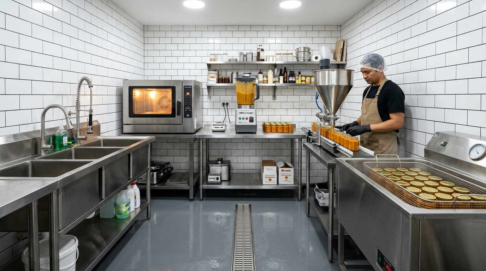
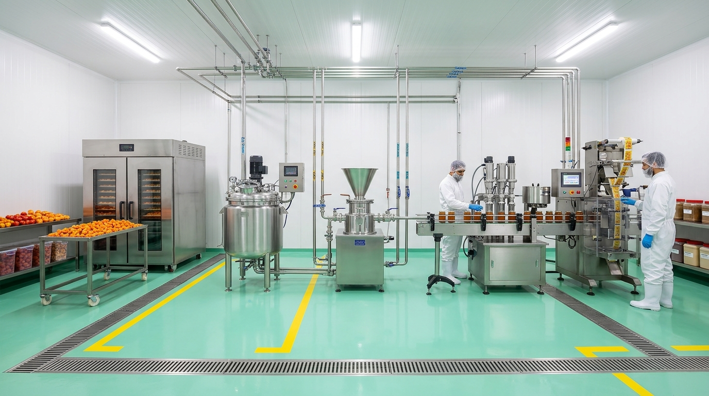
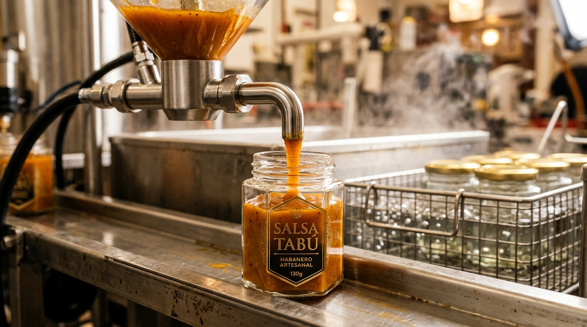
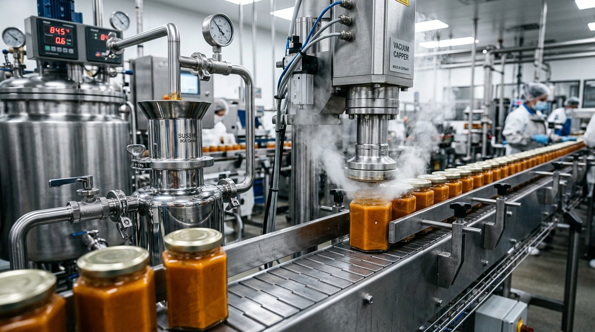

Compara las dos vías de fabricación para Salsa Tabú Gourmet: la Etapa 1 (Manufactura Piloto / Casera) con equipo gastronómico accesible (horno de panadería/pizzas, licuadora industrial de volteo, dosificador de tolva y baño maría tradicional) vs la Etapa 2 (Planta Industrializada) con equipos de China/Taiwán (deshidratador por convección, molino coloidal, cerradora de vacío y envasado vertical).

Opción 1 • Taller Piloto (16 m²)Arranque con equipos gastronómicos comerciales (horno de pizza/pan, licuadora de volteo 20L, dosificador de cono neumático y tina de baño maría). Ideal para validar el mercado sin endeudarse.

Opción 2 • Planta Continua (64 m²)Equipamiento industrial en acero inoxidable SUS316L con deshidratador por convección, molino coloidal de alta cizalla, llenadora de pouches y envasadora vertical para sachets de OXXO.
Este plano está optimizado para un local comercial pequeño, cocina oscura o garage adaptado. Sigue el principio sanitario de marcha hacia adelante (flujo en "U" o en "L") para evitar contaminación cruzada.

1. Dosificado Volumétrico Neumático: La tolva cónica SUS304 permite alimentar la salsa espesa de habanero con aceite de oliva sin estancamiento. La válvula antigoteo con corte neumático garantiza un llenado exacto de 130g ± 1g en menos de 2 segundos.
2. Principio del Vacío en Baño María: Al sumergir los frascos con tapa twist-off pre-ajustada en agua caliente a 85°C durante 15 minutos, el aire en el espacio de cabeza (headspace) se expande y escapa a través del plastisol microporoso. Al enfriarse a temperatura ambiente, los vapores residuales condensan provocando una contracción volumétrica drástica que colapsa el botón de seguridad de la tapa (efecto "pop" audible) y genera un vacío hermético de 10–15 inHg.
Se desinfecta el habanero en tina con bactericida vegetal y se pela el ajo morado con soplado de aire para evitar machacarlo a mano.
En horno de gaveta o convector comercial a 80°C–90°C. El habanero se infla perdiendo humedad y el ajo se carameliza sin quemarse.
Se vierte el aceite de oliva extra virgen, ajo, chiles horneados y ácidos cítrico/ascórbico en licuadora de volteo. Se muelen las hojuelas en 90 segundos.
La mezcla caliente se vacía a la tolva con dosificador de pistón. Se llenan 50 frascos de 130g en 4 minutos con exactitud de un gramo sin derrames.
Los frascos tapados se colocan en canastilla perforada y se sumergen 15 min a 85°C. Al enfriar suena el "clic" del botón de vacío. 2 años de anaquel garantizados.
| Equipo / Puesto de Trabajo | Modelo Recomendado | Función Específica | Proveedor Típico | Costo Unitario (MXN) |
|---|---|---|---|---|
| Peladora Neumática de Dientes de Ajo | FX-128 / Mini Peeler | Pela 15 kg/hora sin romper el ajo | Importador CDMX / Alibaba | $11,500 MXN |
| Horno de Convección / Pizzas | San-Son / Ferrer 6 Charolas | Tostado e inflado térmico uniforme | Fabricante Nacional (CDMX) | $38,000 MXN |
| Licuadora Industrial de Volteo | Torrey / International 20 L | Molienda de hojuelas con aceite de oliva | Distribuidor Gastronómico | $22,500 MXN |
| Dosificadora de Pistón Neumática | G1WY-500 (Tolva cónica) | Llenado de 50 a 500 ml para frascos | MercadoLibre / Importador | $19,000 MXN |
| Tina de Baño María con Canastilla | TP-100L SS304 Eléctrico | Pasteurización térmica y vacío 85°C | Taller de Acero Inoxidable CDMX | $14,500 MXN |
| Etiquetadora Manual de Botellas | LT-50 con fechador | Coloca etiqueta cilíndrica y fecha lote | Amazon / MercadoLibre | $3,500 MXN |
| INVERSIÓN TOTAL EQUIPO TALLER PILOTO: | $109,000 MXN (~$5,500 USD) | |||
Planta modular multi-línea con capacidad para fabricar simultáneamente los frascos de cristal (130g), los pouches con boquilla (50g), la Pasta Brava (70g) y los sachets de $10 pesos para cadenas de retail y tiendas OXXO.

1. Molienda Coloidal de Alta Cizalla (Pasta Brava): Con un gap micrométrico ajustable de hasta 50 micras entre el rotor y estator cónicos de acero inoxidable SUS316L a 2,900 RPM, los sólidos de habanero, ajo tostado y aceite de oliva sufren una dispersión homogénea extrema sin calentar el producto, logrando una emulsión estable que jamás se separa en anaquel.
2. Tapado al Vacío por Inyección de Micro-Vapor (ZX-V): En la línea automática, cada frasco pasa bajo un túnel que inyecta una ráfaga de vapor seco saturado a 110°C en el espacio de cabeza milisegundos antes del enroscado de la tapa metálica twist-off. El vapor desplaza el 98% del oxígeno residual; al salir del cabezal magnético, el vapor condensa instantáneamente generando un vacío de grado farmacéutico comercial sin someter la salsa a calor prolongado.
| Equipo Industrial | Modelo & Origen | Especificación / Material | Rendimiento / Hora | Costo FOB (USD) | Costo Aprox (MXN) |
|---|---|---|---|---|---|
| Horno Deshidratador Convector | CT-C-I (Jiangsu, China) | SS304 / 48 Charolas / Eléctrico o Gas | 120 kg / lote | $3,800 USD | $74,800 MXN |
| Molino Pulverizador Universal | WF-20B (China) | SS304 con ciclón recolector de polvo | 60–150 kg / h | $2,100 USD | $41,300 MXN |
| Molino Coloidal Húmedo | JMS-80 (Taiwán / Wenzhou) | Rotor/Estator SS316L (Pasta Brava) | 150–300 kg / h | $2,400 USD | $47,200 MXN |
| Tanque Infusor Enchaquetado | TK-200L (Ace Machinery) | Doble camisa térmica + Agitador PTFE | 200 Litros | $3,200 USD | $63,000 MXN |
| Llenadora de Pistón Doble Cabezal | G2WY-500 (China) | Tolva calefaccionada con agitador continuo | 1,200–1,800 frascos/h | $2,200 USD | $43,300 MXN |
| Cerradora Twist-Off Vacío Vapor | ZX-V Vacuum (Shenzhen/TW) | Inyección de vapor micro-ráfaga | 1,200 frascos/h | $4,500 USD | $88,600 MXN |
| Llenadora/Tapadora Spout Pouches | BGL-2 (Wenzhou) | Inyección por boquilla y tapado torque | 900–1,400 pouches/h | $4,600 USD | $90,600 MXN |
| Envasadora Vertical Continua VFFS | DXD-100Plus (Foshan Dession) | Formadora 4 sellos + muesca abre-fácil | 2,400–3,600 sachet/h | $5,400 USD | $106,300 MXN |
| INVERSIÓN TOTAL PLANTA COMPLETA (8 EQUIPOS): | $28,200 USD | ~$555,100 MXN | |||
Análisis determinista de rendimiento volumétrico, capacidad por turno, cuellos de botella y proyección mensual para el arranque artesanal vs la escala industrial continua.
| Parámetro Operativo | Opción 1: Taller Piloto (16 m²) | Opción 2: Planta Industrial (64 m²) | Factor de Escala |
|---|---|---|---|
| Output en Frascos 130g (por hora) | 40 – 55 frascos/h | 1,200 – 1,500 frascos/h | 25× a 30× |
| Output en Frascos 130g (Turno 8h) | 300 – 400 frascos/día | 9,600 – 12,000 frascos/día | 30× mayor |
| Línea Sachets $10 MXN (Turno 8h) | No viable (llenado manual lento) | 21,600 – 28,800 sobres/día | Exclusivo VFFS |
| Línea Pouches Spout 50g (Turno 8h) | 60 – 100 pouches/día (manual) | 8,000 – 9,600 pouches/día | 80× mayor |
| Volumen Diario de Salsa Neta | ~40 – 52 kg/día | ~1,500 – 2,500 kg/día | 50× mayor |
| Personal Requerido por Turno | 2 operadores gastronómicos | 4 operadores + 1 supervisor | 2.5× personal |
| Cuello de Botella Principal | Capacidad y enfriado de Baño María | Suministro de habanero deshidratado | Térmico vs MP |
| Costo de Mano de Obra por Frasco | ~$3.20 MXN / frasco | ~$0.28 MXN / frasco | 91% ahorro MO |
| Inversión Total Maquinaria | $109,000 MXN | $555,100 MXN ($28,200 USD) | 5.1× inversión |
Evaluación financiera determinista bajo la metodología IN2TECHMX. Desglose de costos fijos, costos variables unitarios por presentación, punto de equilibrio y tiempo de recuperación de capital.
* Nota operativa: Produciendo 350 frascos/día, el punto de equilibrio mensual se cubre en menos de 1 día de producción.
* Nota operativa: Con una línea de 1,200 frascos/hora, el punto de equilibrio mensual se cubre en menos de 1 hora de operación.
| Concepto Financiero | Etapa 1: Taller Piloto (16 m²) | Etapa 2: Planta Industrial (64 m²) | Impacto Financiero de la Escala |
|---|---|---|---|
| Inversión Inicial Total (CAPEX) | $134,000 MXN (~$6,800 USD) | $875,100 MXN (~$44,500 USD) | Inversión 6.5× mayor con tecnología SUS316L |
| Costo Variable Unitario (Frasco 130g) | $27.00 MXN | $19.50 MXN | 27.8% reducción de costo directo |
| Margen de Contribución Unitario | $93.00 MXN (77.5%) | $100.50 MXN (83.8%) | +$7.50 MXN de ganancia por frasco |
| Punto de Equilibrio (Frascos / mes) | 269 frascos / mes | 946 frascos / mes | Ambos con riesgo operativo mínimo (< 1 día prod) |
| Punto de Equilibrio (Ventas en Pesos) | $32,280 MXN / mes | $113,520 MXN / mes | Superable en las primeras 48 horas comerciales |
| Costos Fijos Operativos Mensuales | $25,000 MXN | $95,000 MXN | Incluye 5 salarios, energía trifásica y nave |
| Utilidad Neta Proyectada Mensual | $425,000 MXN | $2,510,000 MXN | 5.9× mayor utilidad mensual |
| Margen Neto Operativo | 59.0% | 59.1% | Rentabilidad de alta gama sin mermas de proceso |
| Período de Recuperación (Payback) | 0.32 meses (~10 días) | 0.35 meses (~11 días) | Retorno ultra-acelerado debido al alto margen gourmet |